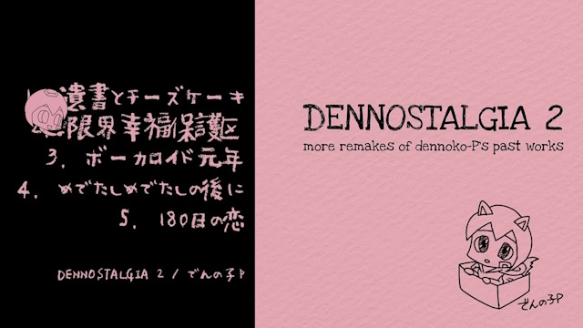
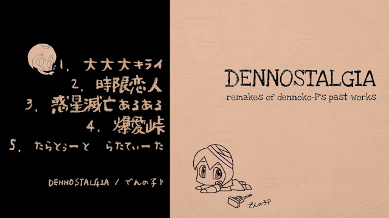
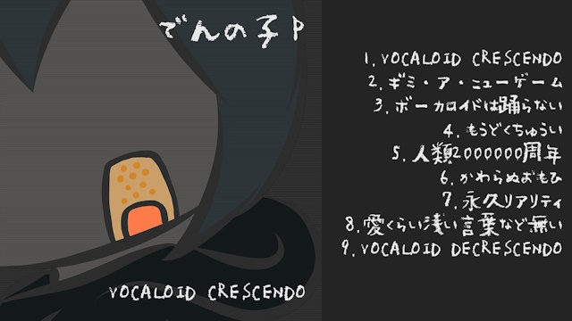
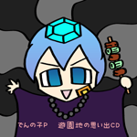
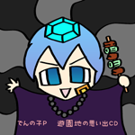

这是一个粉丝制作的中文站点，带我回到源站
Here is a FAN-MAKE Chinese site, click here back to the offical site.
でんの子P 作品列表
我是名字是でんの子P(@dennoko_p)，我使用 VOCALOID 制作视频和歌曲，在这个站点汇总我进行过的相关活动。
※ 注意：本站所有歌曲的中文译名(如果有)均为站长自译，非正式译名，仅供参考。
本站的所有嵌入视频将替换为封面图片，转跳到哔哩哔哩上搬运(如果有)的视频。
专辑/EP
音乐作品的专辑或EP。
VOCALOID STEW
(2024/03/01)
DENNOSTALGIA 2

(2022/12/23)
DENNOSTALGIA

(2021/8/10)
VOCALOID CRESCENDO
(Youtube) Virgin Babylon Records (2020/12/5)

VOCALOID DYSTOPIA
(Bandcamp) Virgin Babylon Records (2016/8/5)
合作参加歌曲
这些歌曲被收录在合辑中。
HATSUNE MIKU Digital Stars 2023 Compilation
Youtube
07.Sweets Display (dennoko-P Remix) / shinra feat. Megurine Luka 提供 Remix 版本。
专辑特别开设站点
2023/11/12 作为 DJ 参与 Digital Stars 发行活动。
07.Sweets Display (dennoko-P Remix) / shinra feat. Megurine Luka 提供 Remix 版本。
专辑特别开设站点
2023/11/12 作为 DJ 参与 Digital Stars 发行活动。
Jukeのはじめてレシピ
(Bandcamp)
はじめてのJuke by V.A. (2019/2)
ボーカロイドは踊らない
(Bandcamp)
【OMOIDE LABEL×抹殺レコーズ】 Vocaloid Juke (2017/2)
ゆるそうで ゆるくない すこし ゆるポート
(Bandcamp)
water and oil / kinkyuuyuruport (2016/7)
with 緊急ゆるポート
with 緊急ゆるポート
这是「緊急ゆるポート＋誰か」的合作作品集。这首歌是每人轮流创作几个小节，接力制作的。
レジェンド・オブ・チンアナゴ
(Bandcamp)
チンアナゴLP / Stripeless (2016/3)
Border
(Bandcamp)
MIKUHOP LP2 / Stripeless (2015/10)
feat.松傘
feat.松傘
Juke仕様や
(Bandcamp)
JUKEしようや JUKE ONLY LIVE TWICE Vol.2 / OMOIDE LABEL (2015/8)
来自芝加哥的舞曲，Juke的合辑 第二张。
思い出ふっと湧く
(Bandcamp)
JUKEしようや ~most dangerous loveromance juke~ / OMOIDE LABEL (2015/7)
来自芝加哥的舞曲，Juke的合辑 第一张。
60秒で○チャ○チャしたい
(Bandcamp)
ONE MINUTES OLDER / Virgin Babylon Records (2015/5)
以「1分钟乐曲」为主题的合辑。我们为你提供60秒的完美歌曲。
收费的CD版在 Virgin Babylon Records 有售。
收费的CD版在 Virgin Babylon Records 有售。
放課後はライムマスター
(Bandcamp)
MIKUHOP LP / Stripeless (2014/10)
VOCALOID + HIP HOP 合辑 第一张。
这首歌曲有视频版本。
这首歌曲有视频版本。
售罄作品
遊園地の思い出CD
已分发完(2017/10/28)
在 2017/10/28 举办的第一场live音乐会（廻転楕円体＆ばぶちゃんWリリースツアー「奈落の遊園地」@渋谷DESEO mini with VILLAGE VANGUARD）的会场上独家发行。

在 2017/10/28 举办的第一场live音乐会（廻転楕円体＆ばぶちゃんWリリースツアー「奈落の遊園地」@渋谷DESEO mini with VILLAGE VANGUARD）的会场上独家发行。

トマトはトマト
「2016春M3 しめきりコンピ 」参加歌曲。已分发完。(2016/4)。
2014 M3 秋のEP
已分发完(2014/10)
伴奏音源
遵守以下3点规则，即可自由投稿视频
- 仅能够非商业使用。
- 保留原曲的幕后信息(曲名、作者名)。
- 贴出原曲的链接。
※ 注意：以下地址均为 dropbox，国内无法访问。
惑星滅亡あるある (DENNOSTALGIA #3 Planet's End Aru-Aru)
结尾 (2:42 开始) 部分的人声出于技术原因难以移除。
没有找到你需要的伴奏吗？在 Twitter(X) 私信 でんの子P 以请求添加伴奏。
© でんの子P 保留所有权利
本站点由 人间工作P 使用 Github Pages 托管并维护。